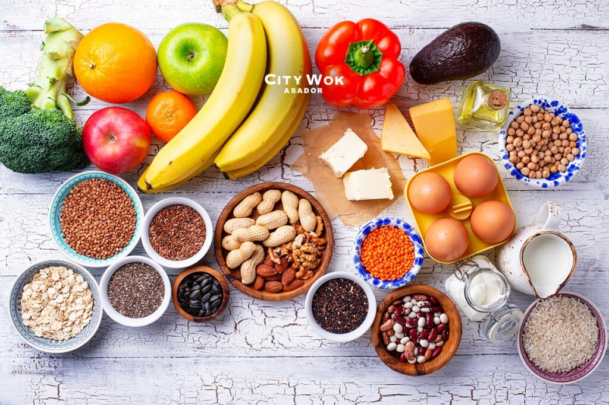

Dieta Nutritiva
Una dieta nutritiva es aquella que incluye una variedad de alimentos saludables que proporcionan los nutrientes esenciales para el cuerpo. Esto incluye frutas, verduras, cereales integrales, proteínas magras y productos lácteos bajos en grasa. Es importante limitar el consumo de grasas saturadas, azúcares y sal para mantener una buena salud.
Componentes de una dieta nutritiva
- Frutas y verduras: Ricas en vitaminas, minerales y fibra.
- Cereales integrales: Proporcionan energía sostenida y fibra.
- Proteínas magras: Esenciales para la construcción y reparación de tejidos.
- Productos lácteos bajos en grasa: Buena fuente de calcio y vitamina D.
- Grasas saludables: Aguacate, nueces, semillas y aceite de oliva.
- Agua: Fundamental para la hidratación y el correcto funcionamiento del cuerpo.
Recomendaciones
- Comer alimentos variados: Asegura la ingesta de todos los nutrientes necesarios.
- Limitar grasas saturadas, azúcares y sal: Para prevenir enfermedades crónicas.
- Elegir alimentos frescos y naturales: Evitar alimentos procesados.
- Cocinar en casa: Controlar ingredientes y cantidades.
- Beber suficiente agua: Mantener buena hidratación.
Consejos adicionales
- Planificar las comidas: Asegura dieta equilibrada y evita decisiones impulsivas.
- Leer etiquetas: Conocer nutrientes y calorías.
- Consultar con un profesional: Nutricionista para un plan personalizado.
Adoptar hábitos saludables ayuda a prevenir enfermedades y mejorar la calidad de vida.